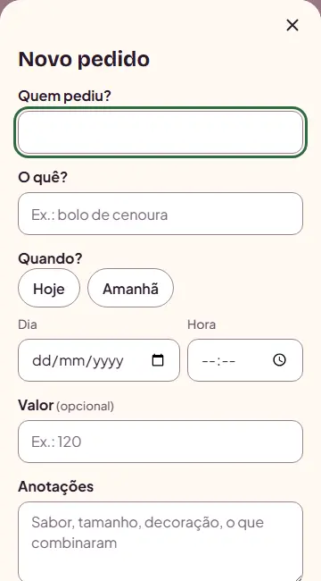
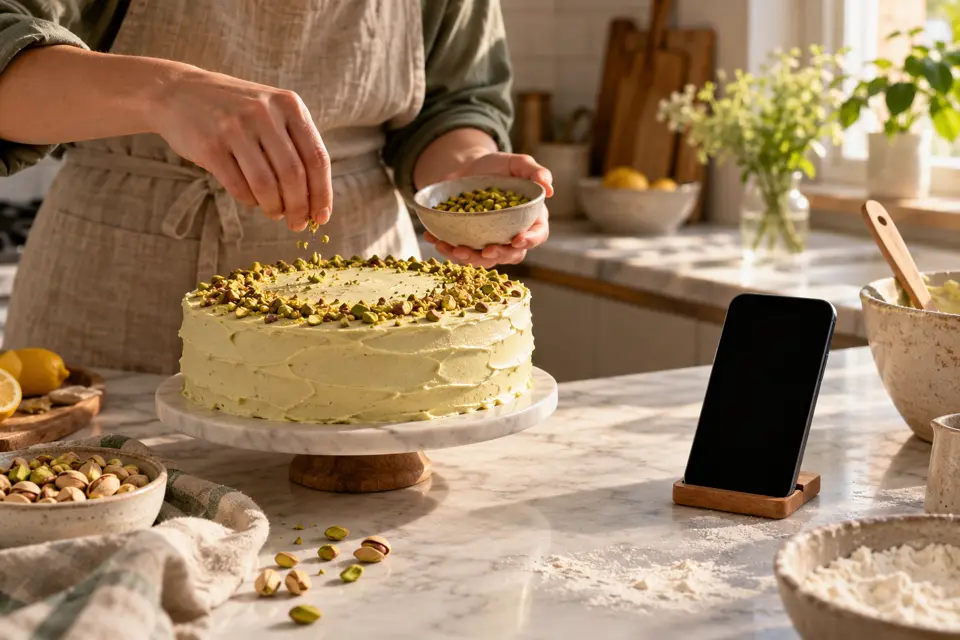
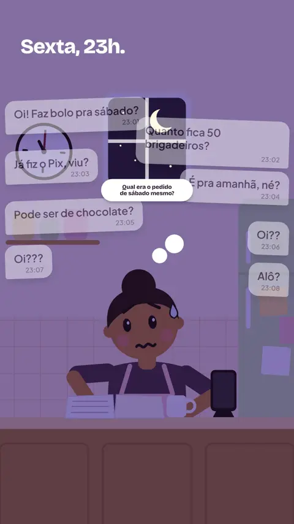
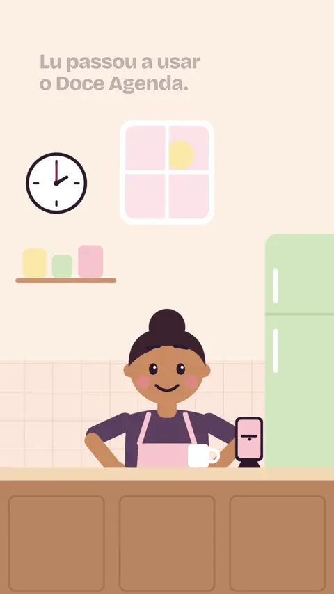
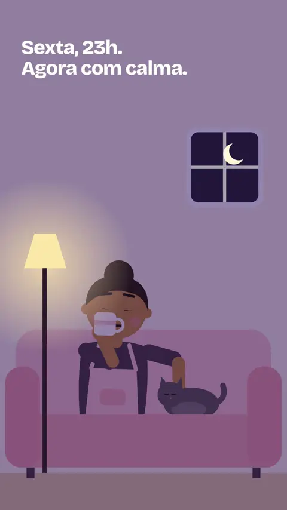
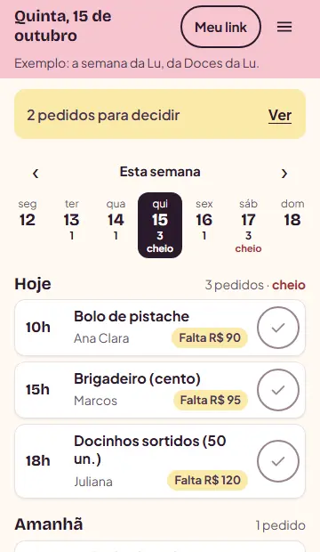
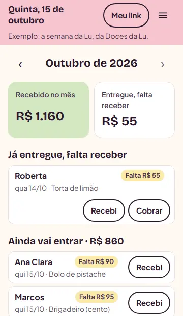

Anote o pedido
Guarde o combinado no dia da entrega.

Para quem vende doces por encomenda
Anote cada pedido, veja quando o dia enche e saiba quanto falta receber. Suas clientes também podem pedir por um link. Tudo no celular.

A sexta-feira da Lu



Guarde o combinado no dia da entrega.

Veja quando o dia enche.

Veja quanto falta receber.

Mande o link no WhatsApp ou deixe na bio do Instagram. A cliente faz o pedido sozinha, sem baixar nada, e você não precisa copiar a conversa.
Nenhum pagamento é pedido pelo link. Nada é confirmado sem você.
Como a cliente vê

 Bolo de aniversárioa partir de R$ 150
Bolo de aniversárioa partir de R$ 150 Brigadeiroa partir de R$ 170
Para quando?
qui 22sex 23sáb 24seg 26
Seu nome
Camila
Enviar pedido
Brigadeiroa partir de R$ 170
Para quando?
qui 22sex 23sáb 24seg 26
Seu nome
Camila
Enviar pedido
Como chega para você
Nada. O Doce Agenda é um projeto acadêmico e gratuito, sem cartão.
Não. Abra pelo navegador do celular, entre com sua conta e pronto.
Não. Ela abre o link, escolhe o doce e a data, e você revisa antes de confirmar.
Com o app aberto, aparece um aviso quando chega um pedido. Com o app fechado, o pedido espera no aviso do topo da Agenda.
Só neste aparelho, enquanto você não limpar o navegador. Para guardar de verdade, crie sua conta grátis.